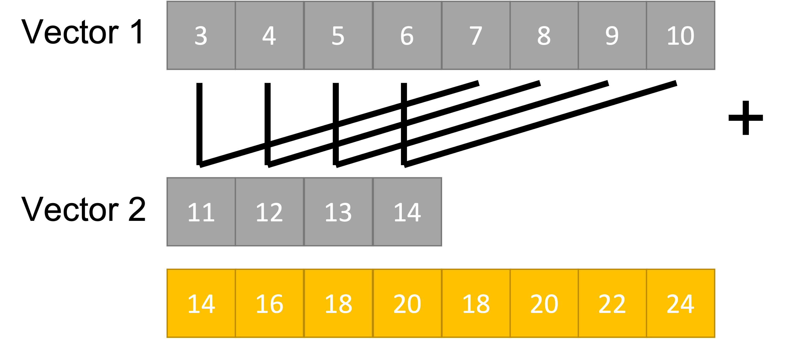
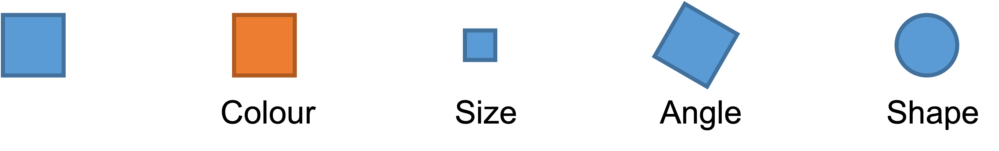
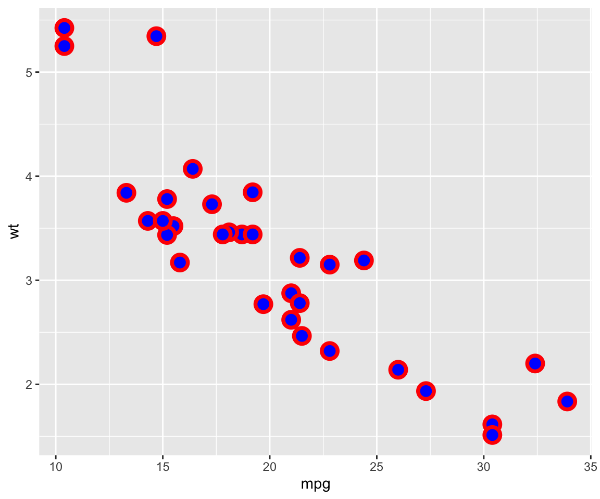

# Addition
14 + 7[1] 21# Division
14 / 7[1] 2# Square root
sqrt(14)[1] 3.741657‘Omics’ as disciplines work to answer questions regarding specific ‘omes’. These questions are enabled by omics experiments; in most cases, these will be sequencing- or mass-spectrometry based.
The identification of a suitable model, types and numbers of samples, the process of extraction and purification of our target ‘ome’, and finally its reformulation into a sequenceable product, i.e. a library, shape the final bioinformatic dataset and place limits on the possible questions we will be able to ask of it.
For example, in the case of RNA-seq, phenol-based extraction and precipitation will yield results that are not always comparable with total RNA extraction with a spin column. Even more, the contingent decision to perform ribodepletion or enrichment for polyadenylated transcript will have an impact even on simple gene expression analyses.
Summing up, an Omics experiment is designed starting from a question, selecting the sample(s), wet lab procedure and library preparations that will enable the most truthful, informative dataset to be built.
R is a programming language built for statistical computing, data exploration, and graphical representation. Developed by Ross Ihaka and Robert Gentleman in the early 1990s, it has grown to be widely adopted in academia, research, and various data-focused industries.
Key features and advantages of R:
First of all, let’s start assembling the tools that you will need for this workshop! While R by itself has no particular user interface, RStudio is the tool that allows you to click and actually ‘see’ what you are doing. RStudio is an integrated development environment (IDE) and will be our primary tool to interact with R.
You can follow two strategies:
R and RStudio on your machineNote that the first option will require a bit more time and effort. To get started with RStudio Cloud (now Posit Cloud), click on this link and create a Posit free account. Once you completed your registration, you are redirected to Your Workspace. To start a new R project, you can click on New Project > New RStudio Project. This will open RStudio on the Cloud.
Now that you have RStudio open, you should see something similar to this:
The RStudio interface is composed of quadrants:
The Console window: located in the bottom-left, it’s where you will find the output of your coding, and it’s also possible to type R code interactively on the console.
The Files / Plots / Packages / Help / Viewer window: located in the bottom-right, it displays your current file system, which is pointed to the position where your Rproject you just created lives.
The Files pane lists the files and folders in your root directory (i.e. where by default RStudio saves your analyses).
Another important pane is Plots, designed to show you any plots you have created.
The Package pane instead allows to manage all the additional tools you can import and use when you perform your analyses. They are useful to enhance the basic R functions from different aspects.
If you need H E L P, you can use the Help pane: you can search for specific topics, for instance how a computation works and other kinds of documentation.
The Environment / History / Connections / Tutorial window: you can find it in the top right position.
It is pointed to the Environment pane, that is a place where you can find all the objects available for computation (e.g. datasets, plots, lists, etc.).
The History pane keeps whatever computation you run in the console. You can re-run the computation stored in the history (double click or copy-paste) and you can also copy the past code into an existing or new R Script.
The most basic computation you can do in R is arithmetic operations. Let’s take a look at the following examples:
# Addition
14 + 7[1] 21# Division
14 / 7[1] 2# Square root
sqrt(14)[1] 3.741657But R is much more than an enormous calculator! Besides arithmetic operations, there are also logical queries you can perform. Logical queries always return either the value TRUE or FALSE.
#1 Is it TRUE or FALSE?
3 == 3[1] TRUE#2 Is 45 bigger than 55?
50 > 56[1] FALSE#3 Are these two words NOT the same?
"Gene" != "gene"[1] TRUENotice that in logical queries,
equal tois represented by==and not by=, which instead is used to assign a value to an object. However, in practice, most R programmers tend to avoid=since it can easily lead to confusion with==.
Below is a list of logical operators commonly used in R
Assigning values to objects with <- is a common task. What can be an object ?
In short, an object can enclose different things which form part of your data analysis. For example, objects are useful to store results that you want to process further in later steps of the analysis. We have to use the assign operator <- to assign a value to an object. Let’s have a look at an example:
# Let's assign the gene "TP53" to the "genes" object
genes <- "TP53"Now the object genes carries the value "TP53". If you check out the Environment pane, you should see that the gene object appeared there. We can also print values of an object in the console by simply typing the name of the object genes and hit Return ↵.
# What are my genes?
genes[1] "TP53"To create objects with multiple values, we can use the function c() which stands for ‘concatenate’:
# Adding some more genes to the object
genes <- c("TP53",
"TNF",
"EGFR",
"VEGFA",
"APOE",
"IL6")
# Here are my genes
genes[1] "TP53" "TNF" "EGFR" "VEGFA" "APOE" "IL6" To concatenate values into a single object, we need to use a comma , to separate each value. Otherwise, R will report an error back.
genes <- c("TP53" "TNF")Don’t worry about it! R’s error messages tend to be very useful and give meaningful clues to what went wrong. In this case, we can see that something ‘unexpected’ happened and it shows where our mistake is.
Storing numerical data in variables
20 -> x
y <- 5
x + y[1] 25Rules and guidelines in naming variables
_x <- 2Error in parse(text = input): <text>:1:2: unexpected symbol
1: _x
^The most basic unit in R. They contain sets of values of the same data type:
The object genes we created before is a character vector.
Can you tell the difference in the elements of the following vectors?
x <- c(1 ,2, 3)
x[1] 1 2 3y <- c(1,2,4,"hello")
y[1] "1" "2" "4" "hello"What happens if you mix data types inside a vector? R generates a resulting vector with a mode that best fits all its elements. The process of converting between different storage modes is known as “coercion”.
Useful functions for creating vectors:
rep(c("hello", "ciao"), times=2)[1] "hello" "ciao" "hello" "ciao" rep(c("hello", "ciao"), each=2)[1] "hello" "hello" "ciao" "ciao" ?repseq(from=2, to=10, by=2)[1] 2 4 6 8 10In vectorised operations equivalent positions are matched and shorter vectors are recycled.
# Operation to a single element
c(1,2,3) * 2[1] 2 4 6# Operation between two vectors
c(1,2,3) + c(4,5,6)[1] 5 7 9# Shorter vector is recycled
c(1,2,3) + c(4,5)[1] 5 7 7Shorter vector is recycled

Values inside objects are meant to be of the same type, for instance numeric or character. Consequently, mixing different types of data into one object is likely a bad idea. However, there is an exception: a list object can hold other objects of different data types, e.g. it represents a collection of vectors.
Lists are highly useful within functions in R. We can combine various types of results into a single list to return them together.
Elements of a list can be named (names attribute).
data <- list(genes = genes,
counts = c(1, 2, 3, 4),
metadata = c("TGFB1", 5, "AKT1", 6))
data$genes
[1] "TP53" "TNF" "EGFR" "VEGFA" "APOE" "IL6"
$counts
[1] 1 2 3 4
$metadata
[1] "TGFB1" "5" "AKT1" "6" You will notice in this example that we do not use
""for each value in the list. This is becausegenesis not acharactervalue, but an object. When we refer to objects, we do not need quotation marks.
Looking at the list item in the environment page, you can see that the object data is classified as a List of 3, and if you click on the blue icon, you can inspect the different objects inside.
Elements are indexed by double brackets but they can also be referenced by the $ notation when named.
# Retrieve
data$genes[1] "TP53" "TNF" "EGFR" "VEGFA" "APOE" "IL6" data[[2]][1] 1 2 3 4data[1]$genes
[1] "TP53" "TNF" "EGFR" "VEGFA" "APOE" "IL6" The data.frame structure is one of the most abundantly used in R. Think of data.frames as the R equivalent of Excel spreadsheets, so a way to store tabular data. As we will see later, pretty much all the data we are going to handle will be in the form of a data.frame or some of its other variations.
# Let's create and display a data frame (a table) with four rows and two columns
df <- data.frame("Class"=c("a","b","c","d"), # First column
"Quantity"=c(1,10,4,6)) # Second column
df Class Quantity
1 a 1
2 b 10
3 c 4
4 d 6We have instructed R to create a data.frame object. We will give more of these commands from now on!
Objects have attributes that we can retrieve with psecialized functions:
How can we check what kind (“class”) of object we have?
class(genes)[1] "character"class(data)[1] "list"names(data)[1] "genes" "counts" "metadata"We mention the term ‘function’ multiple times, but what are functions and why we need them? In simple terms, functions are objects that contain lines of codes and can be seen as shortcuts for our programming. Functions are useful for repeating several operations across multiple datasets with a single command. They save space and time, making our code more readable and reliable. We will make an example to understand better, by calculating the arithmetic mean:
# We create an object that stores our values
values <- c(1, 5, 7, 4, 13, 2, 9, 5)
# Manually compute the sum
sum <- 1 + 5 + 7 + 4 + 13 + 2 + 9 + 5
# Divide the sum by the number of values
mean <- sum / 8
mean[1] 5.75Or…
# Use the mean function that is part of the R base package
mean(values)[1] 5.75# Let's check that the two methods coincide
sum / 8 == mean(values)[1] TRUELet’s define the function for the above example
mean_of_values <- function(data) {
mean_value <- sum(data) / length(data)
return(mean_value)
}
mean_of_values(values)[1] 5.75Make your own function! If the formula to convert Fahrenheit to Celsius is as follows, how can you define a function? (32°F − 32) × 5/9 = 0°C
💡We can also nest one function call inside another.
Looking up help
?sqrt??sqrtGet and Set working directory in R
# Show the current directory
getwd()[1] "/Users/mfakiola/Desktop/fakiola/BioMeTra/Lectures/MBMM/Lectures/repo_test/IntroGR/pages"# Set the working directory
#setwd('Users/<user>/')# Inspect the R environment
ls() [1] "data" "df" "fahrenheit_to_celsius"
[4] "genes" "mean" "mean_of_values"
[7] "sum" "values" "x"
[10] "y" # Inspect files in the currect directory
length(list.files())[1] 3list.files()[1] "GRanges_gtf.Rmd" "Intro_to_R.rmarkdown" "Intro_to_R.Rmd" #dir()
# Verify that a file is in a directory
list.files('../results/')[1] "TSS_v2.bed" "TSS_window.bed" "TSS.bed" 'counts_table.csv' %in% list.files('../results/')[1] FALSEA collection of R packages designed for data science. It aims to overcome many structural challenges when working in R by adopting a unified design and data philosophy. The tools are designed to work together but can seamlessly integrated with the broader R ecosystem.
Tibble - data storage
ReadR - reading data from files
DplyR - Manipulate and filter data
TidyR - Model data correctly
Ggplot2 - Draw figures and graphs
Tidy data describes a standard way of storing data that is used wherever possible throughout the tidyverse.
# Check if tidyverse is not already installed and installs it if the argument returns TRUE
if (!require("tidyverse", quietly = TRUE))
install.packages("tidyverse")
library(tidyverse)The default installation of R includes a variety of built-in datasets, typically used as sample data for experimenting with R functions. We will explore the main functions of dplyr and ggplot2 using the mtcars dataset.
mtcars: Motor Trend Car Road Tests
# Check the list of built-in datasets
#data()
# Load the mtcars dataset
data(mtcars)
head(mtcars, 4) mpg cyl disp hp drat wt qsec vs am gear carb
Mazda RX4 21.0 6 160 110 3.90 2.620 16.46 0 1 4 4
Mazda RX4 Wag 21.0 6 160 110 3.90 2.875 17.02 0 1 4 4
Datsun 710 22.8 4 108 93 3.85 2.320 18.61 1 1 4 1
Hornet 4 Drive 21.4 6 258 110 3.08 3.215 19.44 1 0 3 1Let’s have a look at the dataset. What attributes mtcars has?
# Check the attributes of an object
attributes(mtcars)$names
[1] "mpg" "cyl" "disp" "hp" "drat" "wt" "qsec" "vs" "am" "gear"
[11] "carb"
$row.names
[1] "Mazda RX4" "Mazda RX4 Wag" "Datsun 710"
[4] "Hornet 4 Drive" "Hornet Sportabout" "Valiant"
[7] "Duster 360" "Merc 240D" "Merc 230"
[10] "Merc 280" "Merc 280C" "Merc 450SE"
[13] "Merc 450SL" "Merc 450SLC" "Cadillac Fleetwood"
[16] "Lincoln Continental" "Chrysler Imperial" "Fiat 128"
[19] "Honda Civic" "Toyota Corolla" "Toyota Corona"
[22] "Dodge Challenger" "AMC Javelin" "Camaro Z28"
[25] "Pontiac Firebird" "Fiat X1-9" "Porsche 914-2"
[28] "Lotus Europa" "Ford Pantera L" "Ferrari Dino"
[31] "Maserati Bora" "Volvo 142E"
$class
[1] "data.frame"What do the hearders refer to?
The data was extracted from the 1974 Motor Trend US magazine, and comprises fuel consumption and 10 aspects of automobile design and performance for 32 automobiles (1973–74 models).
mpg - Miles per Gallon cyl - # of cylinders disp - displacement, in cubic inches hp - horsepower drat - driveshaft ratio wt - weight qsec - 1/4 mile time; a measure of acceleration vs - ‘V’ or straight - engine shape am - transmission; auto=0 or manual=1 gear - # of gears carb - # of carburetors.
dplyr comes with many useful functions to manipulate your data. Each function accepts a dataframe/tibble as its first argument and returns a modified dataframe/tibble. It also allows for multiple functions to run together by chaining the operations. This way we can avoid repetive coding and intermediate variables.
input –> selection –> filter –> mutate –> output
The pipe operator %>% to the rescue!
input %>% selection %>% filter %>% mutate
Filtering and subsetting
# Select specific columns
mtcars %>% select(mpg, cyl) %>% head(2) mpg cyl
Mazda RX4 21 6
Mazda RX4 Wag 21 6mtcars %>% select(1, 2) %>% head(2) mpg cyl
Mazda RX4 21 6
Mazda RX4 Wag 21 6mtcars %>% select(-mpg, -cyl) %>% head(2) disp hp drat wt qsec vs am gear carb
Mazda RX4 160 110 3.9 2.620 16.46 0 1 4 4
Mazda RX4 Wag 160 110 3.9 2.875 17.02 0 1 4 4# Select rows
mtcars %>% slice(2:4) mpg cyl disp hp drat wt qsec vs am gear carb
Mazda RX4 Wag 21.0 6 160 110 3.90 2.875 17.02 0 1 4 4
Datsun 710 22.8 4 108 93 3.85 2.320 18.61 1 1 4 1
Hornet 4 Drive 21.4 6 258 110 3.08 3.215 19.44 1 0 3 1# Filter a variable
mtcars %>% filter(mpg>21 & hp>90) mpg cyl disp hp drat wt qsec vs am gear carb
Datsun 710 22.8 4 108.0 93 3.85 2.320 18.61 1 1 4 1
Hornet 4 Drive 21.4 6 258.0 110 3.08 3.215 19.44 1 0 3 1
Merc 230 22.8 4 140.8 95 3.92 3.150 22.90 1 0 4 2
Toyota Corona 21.5 4 120.1 97 3.70 2.465 20.01 1 0 3 1
Porsche 914-2 26.0 4 120.3 91 4.43 2.140 16.70 0 1 5 2
Lotus Europa 30.4 4 95.1 113 3.77 1.513 16.90 1 1 5 2
Volvo 142E 21.4 4 121.0 109 4.11 2.780 18.60 1 1 4 2Let’s create a new variable to identify cars with miles per gallon (mpg) > 25
# Create a new variable
mtcars %>% mutate(highmpg = ifelse(mpg>25, '1', '0')) %>% filter(highmpg==1) mpg cyl disp hp drat wt qsec vs am gear carb highmpg
Fiat 128 32.4 4 78.7 66 4.08 2.200 19.47 1 1 4 1 1
Honda Civic 30.4 4 75.7 52 4.93 1.615 18.52 1 1 4 2 1
Toyota Corolla 33.9 4 71.1 65 4.22 1.835 19.90 1 1 4 1 1
Fiat X1-9 27.3 4 79.0 66 4.08 1.935 18.90 1 1 4 1 1
Porsche 914-2 26.0 4 120.3 91 4.43 2.140 16.70 0 1 5 2 1
Lotus Europa 30.4 4 95.1 113 3.77 1.513 16.90 1 1 5 2 1Combining operations: Identify cars with 5 gears and horse power > 100. Display the miles per gallon in descending order.
Note, we do not create a new object here, just inspecting the output of the combined functions we perform.
# Combining operations
mtcars %>%
mutate(hmpg_gear = ifelse(hp>100 & gear==5, '1', '0')) %>%
filter(hmpg_gear==1) %>%
arrange(desc(mpg)) %>%
select(mpg) mpg
Lotus Europa 30.4
Ferrari Dino 19.7
Ford Pantera L 15.8
Maserati Bora 15.0Transforming data: Long versus Wide Format
Wide Format
Long Format
We use pivot_longer(), which “lengthens” data, increasing the number of rows and decreasing the number of columns. The inverse transformation is pivot_wider().
We will convert a subset (slice and select) of the mtcars object from wide to long format. We specify which columns we want to pivot into longer format in the cols argument. This information will be stored in the metadata column names_to. The actual values will be stored in the values_to column. cols defines a selection of columns. If empty, all variables are selected. You can supply bare variable names, select all variables between x and z with x:z, exclude y with -y.
We keep the rownames as a separate column.
# Convert from wide to long format
mtcars %>% slice(1:4) %>% select(1:4) %>%
mutate(cars=rownames(.)) %>%
#pivot_longer(!cars, names_to = "keys", values_to = "value")
pivot_longer(cols=mpg:hp, names_to = "keys", values_to = "value")# A tibble: 16 × 3
cars keys value
<chr> <chr> <dbl>
1 Mazda RX4 mpg 21
2 Mazda RX4 cyl 6
3 Mazda RX4 disp 160
4 Mazda RX4 hp 110
5 Mazda RX4 Wag mpg 21
6 Mazda RX4 Wag cyl 6
7 Mazda RX4 Wag disp 160
8 Mazda RX4 Wag hp 110
9 Datsun 710 mpg 22.8
10 Datsun 710 cyl 4
11 Datsun 710 disp 108
12 Datsun 710 hp 93
13 Hornet 4 Drive mpg 21.4
14 Hornet 4 Drive cyl 6
15 Hornet 4 Drive disp 258
16 Hornet 4 Drive hp 110 We first covert from wide to long format (in this cases using gather which is no longer under active development). Then we convert back to wide format.
# Convert from long back to wide format
mtcars %>% slice(1:4) %>% select(1:4) %>%
mutate(cars=rownames(.)) %>%
# Here we use gather
gather(keys, value, -cars) %>%
pivot_wider(names_from = "keys",
names_prefix = "var_",
values_from = "value")# A tibble: 4 × 5
cars var_mpg var_cyl var_disp var_hp
<chr> <dbl> <dbl> <dbl> <dbl>
1 Mazda RX4 21 6 160 110
2 Mazda RX4 Wag 21 6 160 110
3 Datsun 710 22.8 4 108 93
4 Hornet 4 Drive 21.4 6 258 110Similar transformations can be achieved with the reshape::melt and reshape::dcast functions
ggplot is a powerful and flexible library for tidyverse. Data stored in a dataframe/tibble is passed to ggplot along with two main arguments: i) columns to be plotted, and ii) graphical representation to be displayed. Additional customization is possible.
Geometries and Aesthetics
Geometries are types of plot:
geom_point() Point geometry, (x/y plots, stripcharts etc)geom_line() Line graphsgeom_bar() Barplotsgeom_boxplot() Box plotsgeom_histogram() Histogram plotsAesthetics provide options to change the appearance of data in a plot - Using fixed values or - Linking to a column in the dataset - called an aesthetic mapping
In ggplot2, the x and y mappings for data points are specified within the aes() function, either in the ggplot() function or in individual geom layers. The geom determines how the data points are represented graphically (e.g., as points, lines, etc.), but the x and y values themselves are mapped to the data.


Here, we create a scatter plot for two variables in the mtcar dataset and we will annotate the data based on a third variable.
mtcars %>% ggplot(aes(mpg, wt, colour=cyl)) + geom_point()Notice that the cyl is depicted as continuous variable. We can change this behaviour and plot it as discrete variable by converting it to a factor.
# Check the class of cyl and convert to factor by defining the levels of the factor
class(mtcars$cyl)[1] "numeric"unique(mtcars$cyl)[1] 6 4 8mtcars %>% mutate(cyl = factor(cyl, levels=unique(cyl)) ) %>% pull(cyl) %>% class()[1] "factor"#mtcars %>% mutate(across(cyl, as.factor)) %>% pull(cyl) %>% class()mtcars %>% mutate(across(cyl, as.factor)) %>%
ggplot(aes(mpg, wt, colour=cyl)) +
geom_point()Can you modify the code to annotate with car labels?
mtcars %>%
mutate(across(cyl, as.factor),
cars=rownames(.) ) %>%
ggplot(aes(mpg, wt, colour=cyl, label=cars)) +
geom_point() +
geom_text(vjust=1.6, hjust=0.4, size=2)More exercises:
mtcars %>% ggplot(aes(mpg, wt )) + geom_point(size=4, colour='red', fill='blue', shape=21, stroke=2)
mtcars %>% mutate(across(gear, as.factor)) %>% ggplot(aes(mpg, wt, size=gear)) + geom_point(colour='red')Geometries warn when missing values have been dropped from the data set and not plotted. You can turn this off by setting na.rm = TRUE.
Plotting distributions - multiple density plots
Plot the miles per gallon density across different cylinder values
mtcars %>% mutate(across(cyl, as.factor)) %>%
ggplot(aes(mpg, fill=cyl, colour = cyl)) +
geom_density(alpha=0.4) +
theme_classic() +
scale_fill_manual(values=c('grey','lightblue','yellow')) +
theme(ggtitle("Miles per gallon density"),
legend.position="bottom",
legend.text = element_text(size = 20),
legend.title = element_text(size = 15, face = 'bold'),
axis.title.x = element_text(size = 16),
axis.title.y = element_text(size = 16),
axis.text.y=element_text(size = 10),
axis.text.x=element_text(size = 10),
legend.key.size = unit(.4, "cm")) +
ylab('Density') +
xlab('Miles per gallon')💡 Perform Exploratory Data Analysis using the package
explore. https://cran.r-project.org/web/packages/explore/vignettes/explore-mtcars.html
You might want to save your code for a later use, especially when it starts to become long and complex. In this case, it is not very convenient to write it in the console, which does not keep track of it (as far as you don’t go back in the History) and does not allow to edit the code and save changes.
So, instead, we can write code into an R Script, which is a document that RStudio recognizes as R programming code and has .R as extension. Files that are not R Scripts, like .txt, .rtf or .md, can also be opened in RStudio, but any code written in it will not be automatically recognized.
When opening an R script or creating a new one, it will display in the Source window. The term ‘source’ can be understood as any type of file, e.g. data, programming code, notes, etc.
Now let’s create an R script, by selecting
File > New File > R Scriptin the menu bar, or using the keyboard shortcutCtrl + Shift + Non PC andCmd + Shift + Non Mac. We will name it “Day1.R”.Now you can go in the History, copy the lines previously coded (by clicking on the first line you want to copy, then pressing
Shift + Down arrow, up to the last line of code) and then clickTo Source.❗️ Writing some code in your R script will NOT automatically run it! If you tried pressing
Return ↵, you would only add a new line. Instead, you need to select the code you want to run and pressCtrl+Return ↵(PC) orCmd+Return ↵(Mac).